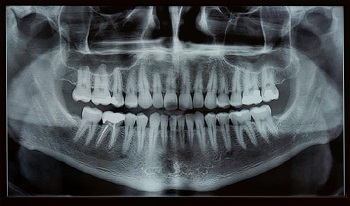
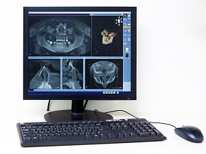
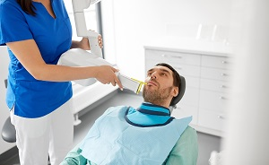
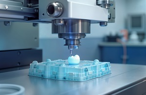
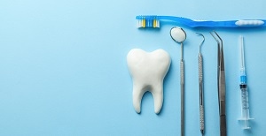

Comprehensive Dental Solutions for Lifelong Health
From routine wellness check-ups to advanced restorative care, we offer a full spectrum of services to keep your smile healthy and beautiful.

Routine & Preventative Care
- Routine Wellness Check-ups and Professional Cleanings.
- Digital X-Rays for accurate assessment.
- Oral Hygiene Tips and Nutritional Guidance.
Specialist & Cosmetic Treatments
- Orthodontics and Cosmetic Dentistry (Dr. Grey).
- Dental Implants and restorative procedures.
- Smile Makeovers and Veneers.
Restorative & Emergency Care
- Urgent care for acute dental emergencies.
- Specialized procedures like Root Canal Treatment.
- Cutting-Edge Technology (CAD/CAM, 3D Printing, etc.).
Our New Dental Technologies: Advancing Your Care
At 100SMILES Dental Care, we are committed to staying at the forefront of dental technology to provide our patients with the best possible care.
1. Digital X-Rays
Our state-of-the-art digital X-ray system provides high-resolution images with significantly **less radiation** exposure compared to traditional X-rays. This technology allows for quicker and more **accurate diagnoses**.
2. Intraoral Cameras
Our cameras offer a detailed view of your mouth, capturing high-quality images of your teeth and gums. This enhances our ability to **detect problems early** and helps us better explain treatment options.
3. Laser Dentistry

We use advanced laser technology for **minimally invasive procedures** with reduced pain and **faster healing times**. It is used for gum disease therapy, cavity detection, and teeth whitening.
4. CAD/CAM Technology
Our CAD/CAM (Computer-Aided Design and Manufacturing) system enables us to create **precise and custom dental restorations** (crowns, bridges, veneers) **in a single visit**.
5. 3D Printing
We utilize 3D printing to create **accurate dental models, surgical guides, and custom appliances**. This innovation allows for more precise treatment planning and improved outcomes.
6. Teledentistry
Our teledentistry services provide **convenient access** to dental care from the comfort of your home. We can assess your concerns and provide professional advice through **virtual consultations**.
Meet the Dedicated 100SMILES Team
Our staff, with over 50 years of collective experience, shares a profound commitment to dental health.
Dr. Johanna Grey (DDS, Orthodontics)
Dr. Grey focuses on orthodontic excellence and specialized cosmetic care.

Dr. Benedict Sloan (DMD)
Our seasoned dentist, committed to high-quality general and family care.

Richard Attam (BDS - Hygienist)
Our skilled Dental Hygienist, utilizing a compassionate approach to prevention.

April Kepner (Receptionist)
The friendly face and warm smile of 100SMILES, ensuring your visit is seamless.

Dr. Emily Carter (DDS, Pediatric Dentistry)
Our dedicated Pediatric Dentist, ensuring children receive the best care in a comforting environment.